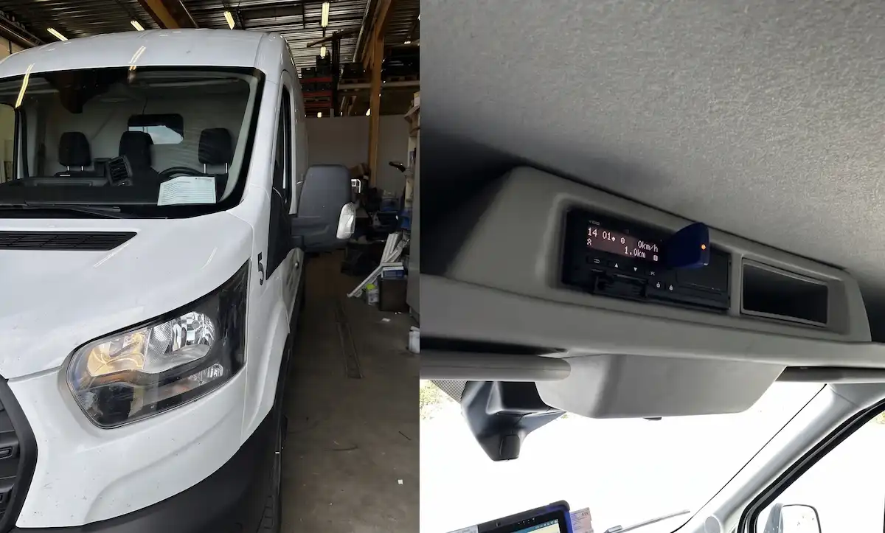

Älypiirturi pakolliseksi yli 2500 kg kevytkuorma-autoihin ulkomaanliikenteessä

Tiesitkö, että lainsäädäntö muuttuu ja EU:n liikkuvuuspaketin myötä toisen sukupolven älypiirturin asennus tulee pakolliseksi myös yli 2 500 kg painaviin pakettiautoihin ja kevytkuorma-autoihin kansainvälisessä liikenteessä?
Aiemmin vain raskaampaa kalustoa koskeneet ajo- ja lepoaikasäädökset laajenevat koskemaan kevyempää ammattiliikennettä. Vaatimus koskee tavaraliikennettä Euroopan rajojen yli. Tämä koskettaa lukuisia suomalaisia kuljetusyrittäjiä ja kuriiripalveluita, jotka ajavat esimerkiksi Ruotsiin, Norjaan tai muihin EU-maihin.
Mitä muutos tarkoittaa yrittäjälle?
Kansainvälistä rahtia ajaviin kevyisiin hyötyajoneuvoihin on asennettava uuden sukupolven (G2V2) älypiirturi. Laitteen avulla valvotaan kuljettajien ajo- ja lepoaikoja tarkasti satelliittipaikannusta hyödyntäen. Säännöksen noudattamatta jättäminen voi johtaa matkan keskeytymiseen rajalla ja tuntuviin sakkoihin.
Koskeeko lakimuutos sinun tai yrityksesi kalustoa?
Me Pitek Oy:ssä tunnemme uusimmat säädökset ja olemme valtuutettu piirturikorjaamo. Asennamme ja kalibroimme hyväksytyt älypiirturit siististi myös paketti- ja kevytkuorma-autoihin. Kysy tarjousta asennuksesta hyvissä ajoin ennen määräaikojen umpeutumista!
Ota yhteyttä